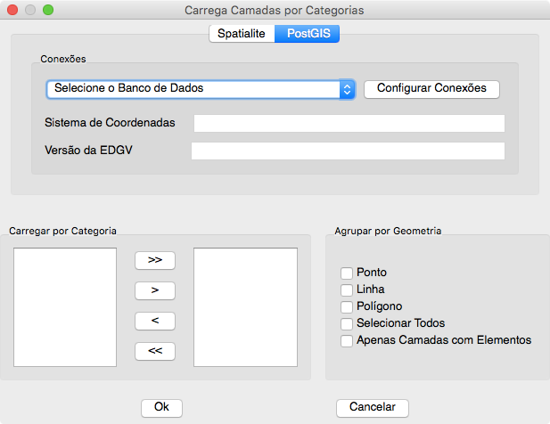
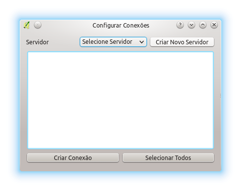
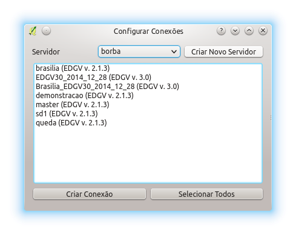

O configurador de conexões permite que sejam buscados todos os bancos EDGV criados em um dado servidor PostgreSQL.

Para que uma nova conexão seja adicionada basta clicar em Configurar Conexão. Desta forma, a janela seguinte aparecerá permitindo a adição.

O usuário deve selecionar o servidor que será usado para a busca de bancos. Caso o servidor não esteja listado, um novo deve ser criado. Basta para tal, clicar em Criar Novo Servidor
Com o servidor selecionado, o plugin irá buscar automaticamente todos os bancos EDGV criados pelo DSGTools. Esses bancos serão listados e a versão do banco será listada. Resta ao usuário selecionar os bancos desejados ou clicar em Selecionar Todos para e clicar em Criar Conexão para que as conexões sejam adicionadas.

Também é possível que sejam removidas registros de bancos que não existem mais. Para tanto basta clicar em Remover Conexões para Banco de Dados Faltantes para que as conexões sejam adicionadas.